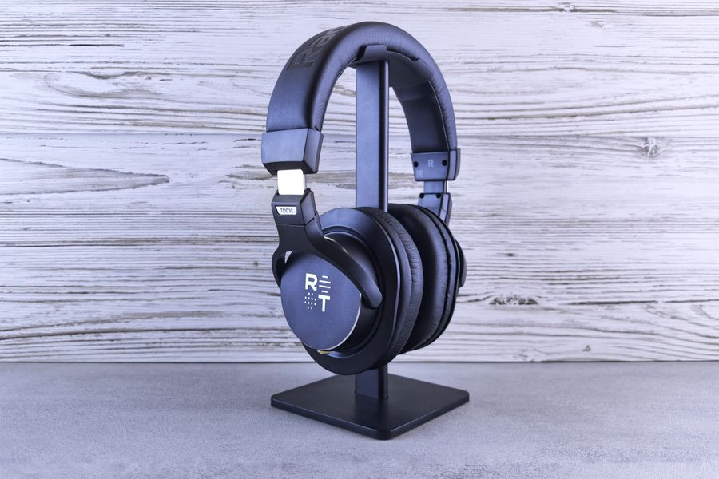

El mejor
En avión, tren u oficina abierta no hay discusión. Si vas a usarlos muchas horas, es donde el dinero mejor se nota.

| Batería | 30 horas con cancelación activa |
|---|---|
| Carga rápida | 3 minutos para 3 horas de uso |
| Altavoz | 30 mm |
| Cancelación | 8 micrófonos |
| Peso | 250 g |
| Códecs | Incluye LDAC |
| Multipunto | Sí |
Datos de la ficha oficial del fabricante (sony.es — WH-1000XM5, especificaciones), consultada el 2026-09-02. No publicamos ningún dato que no podamos comprobar ahí.
No ponemos precios porque cambian cada día. Lo ves actualizado al entrar.
¿Comparándolo con otros? En la guía de los mejores auriculares de diadema en calidad-precio están las cuatro opciones de la categoría: la mejor, dos de gama media y la mejor barata.